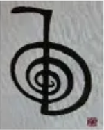
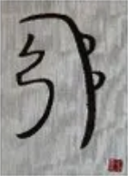
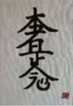
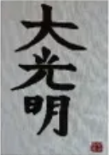

Aprende Reiki
¿Qué es el Reiki?
Masajes terapéuticos Reiki, basados en la creencia hinduista de que el correcto fluir de la Energía Vital a través de los distintos chakras.
Mikao Usui, (monje budista japonés) fue quien desarrolló el Reiki durante un retiro espiritual a mediados del siglo XIX, aunque él siempre afirmó que únicamente «redescubrió» una técnica de sanación milenaria que ya existía pero que llevaba mucho tiempo olvidada.
La práctica del Reiki se basa en un emisor que, a través de sus manos transmite Reiki (energía vital) a un receptor que puede ser él mismo u otra persona (presente o no en el espacio-tiempo), con el fin de paliar o intentar eliminar molestias y enfermedades. No obstante, dado que Reiki es una energía universal los tratamientos también pueden dirigirse a otros seres vivos como animales, plantas o situaciones.
Reiki con cuencos tibetanos
Sonido del un cuenco aislado
¿Qué son los cuencos tibetanos?
Los cuencos tibetanos son instrumentos de curación, sanación, relajación y meditación, ayudándonos a establecer una vibración saludable en todo nuestro organismo, tanto a nivel físico, mental o psicológico, emocional y espiritualmente.
Son un medio maravilloso para equilibrar los chackras y cambiar la conciencia desde un estado alterado de ansiedad y estrés hacia un estado de paz, relajación y serenidad, induciendo estados de sanación espontánea y estados místicos y elevando nuestra frecuencia vibratoria.
Las personas que han experimentado un masaje sónico con cuencos tibetanos experimentan grandes cambios, mayor claridad mental, aumento de la creatividad, mayor concentración, mayor visión de futuro y una gran sensación de paz. El resultado es un individuo más productivo, más centrado, más feliz, más sereno, más equilibrado, más en paz consigo mismo.
Simbolos del reiki
| Símbolo | Significado | Como usar el símbolo | Ejemplo |
|---|---|---|---|
|  Cho Ku Rei | "Dios está aquí" "Que toda la energía necesaria se haga presente" | Al trazar el simbolo se multiplica la capacidad propia de acceder a la energía reiki. Se traza al princupio de la sesión para conectar con la energía reiki y al final del tratamiento para sellarlo. Te lo puedes trazar en las manos antes de dar una sesión de Reiki. | Eleva el nivel de vibración. Activa la ley de atracción. |
|  Shi He Ki | "La tierra y el cielo se unen" | Se utiliza para reestrablecer el equilibrio emocional y psicológico. | Puede ser utilizado para ayudarnos en muchas situaciones: eliminar miedos, eliminar malos hábitos, eliminar bloqueos emocionales, etc. |
|

Hon She Ze Sho Nen |
"Ni pasado, ni presente, ni futuro. | Los pasos para enviar Reiki a distancia son clave en este simbolo. | Sirve para sanar nuestro pasado, enviar energia a nuestro futuro inmediato, etc. |
|

Dai Ko Myo |
"Gran ser del Universo, brilla sobre mi y sé mi amigo" | Es el símbolo más elevado e integra todos los demás. | Para potenciar el efecto de cualquier técnica que utilicemos(autopurificación, meditacion, etc) |